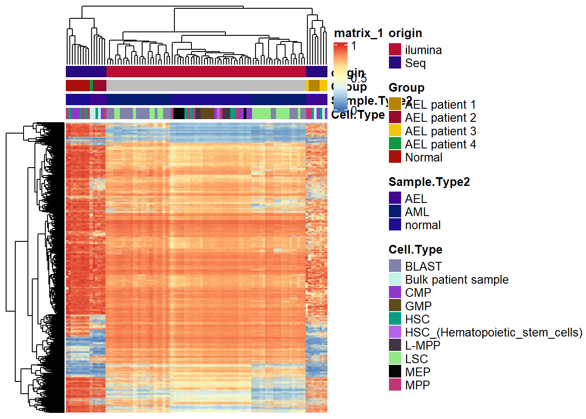
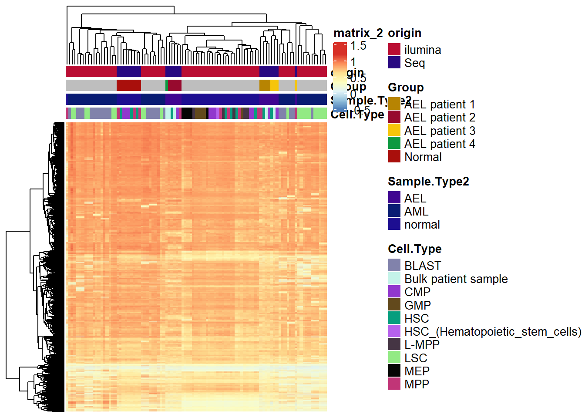
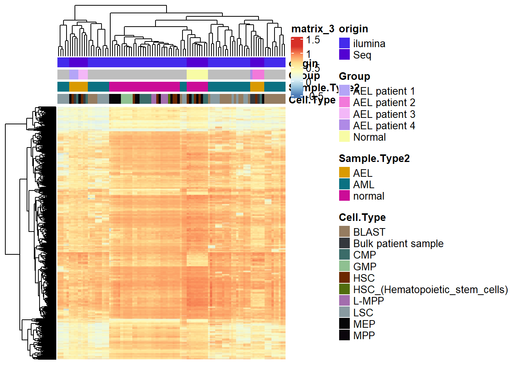
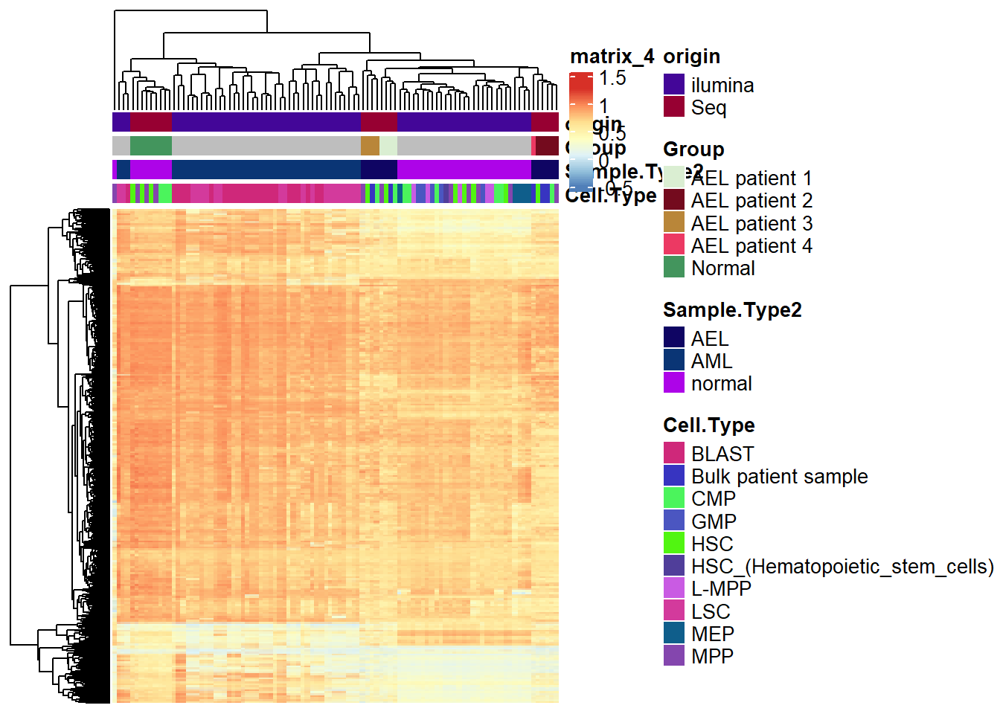

Last updated: 2023-06-16
Checks: 7 0
Knit directory: 22_AEL/
This reproducible R Markdown analysis was created with workflowr (version 1.7.0.4). The Checks tab describes the reproducibility checks that were applied when the results were created. The Past versions tab lists the development history.
Great! Since the R Markdown file has been committed to the Git repository, you know the exact version of the code that produced these results.
Great job! The global environment was empty. Objects defined in the global environment can affect the analysis in your R Markdown file in unknown ways. For reproduciblity it’s best to always run the code in an empty environment.
The command set.seed(20230201) was run prior to running
the code in the R Markdown file. Setting a seed ensures that any results
that rely on randomness, e.g. subsampling or permutations, are
reproducible.
Great job! Recording the operating system, R version, and package versions is critical for reproducibility.
Nice! There were no cached chunks for this analysis, so you can be confident that you successfully produced the results during this run.
Great job! Using relative paths to the files within your workflowr project makes it easier to run your code on other machines.
Great! You are using Git for version control. Tracking code development and connecting the code version to the results is critical for reproducibility.
The results in this page were generated with repository version 83a5ebf. See the Past versions tab to see a history of the changes made to the R Markdown and HTML files.
Note that you need to be careful to ensure that all relevant files for
the analysis have been committed to Git prior to generating the results
(you can use wflow_publish or
wflow_git_commit). workflowr only checks the R Markdown
file, but you know if there are other scripts or data files that it
depends on. Below is the status of the Git repository when the results
were generated:
Ignored files:
Ignored: .Rhistory
Ignored: .Rproj.user/
Ignored: refdir/
Untracked files:
Untracked: analysis/3_combine_meth_ge_mofa.Rmd
Untracked: analysis/DMR_report_illumina.Rmd
Untracked: analysis/candidate_genes.Rmd
Untracked: analysis/enhancer_gene_pairs.Rmd
Untracked: analysis/epiCMIT_score.Rmd
Untracked: analysis/homer_all.Rmd
Untracked: analysis/homer_results_promoter.Rmd
Untracked: analysis/inital_analysis.Rmd
Untracked: analysis/prepare_homer.Rmd
Untracked: analysis/test.Rmd
Untracked: code/dataETOC2.Rd
Untracked: code/support_functions.R
Untracked: data/AEL_gr1_vs._AEL_gr2_down.txt
Untracked: data/AEL_gr1_vs._AEL_gr2_up.txt
Untracked: data/AEL_subgroup_dmr.bedGraph
Untracked: data/CMP_vs._all_in_normal_down.txt
Untracked: data/CMP_vs._all_in_normal_up.txt
Untracked: data/CMP_vs._all_in_tumor_down.txt
Untracked: data/CMP_vs._all_in_tumor_up.txt
Untracked: data/DML_tests.RDS
Untracked: data/GSE63409_sample_sheet.txt
Untracked: data/HSC_vs._all_in_normal_down.txt
Untracked: data/HSC_vs._all_in_normal_up.txt
Untracked: data/HSC_vs._all_in_tumor_down.txt
Untracked: data/HSC_vs._all_in_tumor_up.txt
Untracked: data/MPP_vs._all_in_normal_down.txt
Untracked: data/MPP_vs._all_in_normal_up.txt
Untracked: data/MPP_vs._all_in_tumor_down.txt
Untracked: data/MPP_vs._all_in_tumor_up.txt
Untracked: data/bigWigs_2023/
Untracked: data/deseq.RDS
Untracked: data/dmls_single.RDS
Untracked: data/dmls_single_15_06.RDS
Untracked: data/dmr_beds/
Untracked: data/dmr_beds_enhancer/
Untracked: data/dmr_beds_promoter/
Untracked: data/dmrs_single.RDS
Untracked: data/dmrs_single_15_06.RDS
Untracked: data/gene_count_matrix.csv
Untracked: data/gene_expression_mat.txt
Untracked: data/homer_results_merged.RDS
Untracked: data/motif_enrichment_AEL_subgroups.RDS
Untracked: data/mutations.txt
Untracked: data/ncomms9489-s3.xlsx
Untracked: data/ncomms9489-s7.xlsx
Untracked: data/no_snps_methrix_2023.RDS
Untracked: data/pcbc-stemsig.p219.Rda
Untracked: data/processed_rnbset_GSE63409.RDS
Untracked: data/raw_methrix_2023.RDS
Untracked: data/samples_stringtie.txt
Untracked: data/stringtie/
Untracked: data/transcript_count_matrix.csv
Untracked: data/tumor_vs._all_in_normal_down.txt
Untracked: data/tumor_vs._all_in_normal_up.txt
Untracked: data/tumor_vs._normal_in_CMP_cells_down.txt
Untracked: data/tumor_vs._normal_in_CMP_cells_up.txt
Untracked: data/tumor_vs._normal_in_HSC_cells_down.txt
Untracked: data/tumor_vs._normal_in_HSC_cells_up.txt
Untracked: data/tumor_vs._normal_in_MPP_cells_down.txt
Untracked: data/tumor_vs._normal_in_MPP_cells_up.txt
Untracked: omnipathr-log/
Untracked: output/filtered/
Untracked: output/filtered_MC_per_chr.tsv
Untracked: output/filtered_contig_lens.tsv
Untracked: output/filtered_global_MC_per_samp.tsv
Untracked: output/filtered_methrix_reports.html
Untracked: output/filtered_n_covered_by_all_samples.tsv
Untracked: output/filtered_n_covered_per_chr.tsv
Untracked: output/raw/
Untracked: output/raw_MC_per_chr.tsv
Untracked: output/raw_contig_lens.tsv
Untracked: output/raw_global_MC_per_samp.tsv
Untracked: output/raw_methrix_reports.html
Untracked: output/raw_n_covered_by_all_samples.tsv
Untracked: output/raw_n_covered_per_chr.tsv
Untracked: output/res_enhancer/
Unstaged changes:
Modified: analysis/DMR_calling.Rmd
Modified: analysis/DMR_report.Rmd
Note that any generated files, e.g. HTML, png, CSS, etc., are not included in this status report because it is ok for generated content to have uncommitted changes.
These are the previous versions of the repository in which changes were
made to the R Markdown (analysis/differential_AML.Rmd) and
HTML (docs/differential_AML.html) files. If you’ve
configured a remote Git repository (see ?wflow_git_remote),
click on the hyperlinks in the table below to view the files as they
were in that past version.
| File | Version | Author | Date | Message |
|---|---|---|---|---|
| Rmd | 83a5ebf | tkik | 2023-06-16 | wflow_publish(c("analysis/DMR_report_AEL_subgroups.Rmd", "analysis/differential_AML.Rmd")) |
#Genome of your preference to work with
if (!requireNamespace("BiocManager", quietly = TRUE))
install.packages("BiocManager")
library(BiocManager)
if(!requireNamespace("BSgenome.Hsapiens.UCSC.hg19")) {
BiocManager::install("BSgenome.Hsapiens.UCSC.hg19")
}
library(BSgenome.Hsapiens.UCSC.hg19)
library(annotatr)
library(ComplexHeatmap)
library(ChIPseeker)
library(TxDb.Hsapiens.UCSC.hg19.knownGene)
library(clusterProfiler)meth <- readRDS(file.path("data", "no_snps_methrix_2023.RDS"))
meth@colData <- meth@colData[,-grep("X", colnames(meth@colData))]
meth@colData$Cell.Type <- gsub(" \\(.*\\)", "", meth@colData$Cell.Type)
meth@colData$Group <- as.character(meth@colData$Group)
meth@colData$Group[meth@colData$Group==""] <- "Normal"
meth@colData$Cell.Type[is.na(meth@colData$Cell.Type)] <- "Bulk patient sample"
dmrs <- readRDS(file=file.path("data", "dmrs_single.RDS"))
dmls <- readRDS(file=file.path("data", "dmls_single.RDS"))
labels <- strsplit(names(dmrs), split="_")
labels <- lapply(labels, function(x) ifelse(length(x)==3, paste0(x[2], " vs. ", x[3], " in ", x[1], " cells"), paste0(x[1], " vs. all in ", x[2])))
labels <- unlist(labels)
names(dmrs) <- labels
names(dmls) <- labels
#illumina <- readRDS("data/processed_rnbset_GSE63409.RDS")
#illumina@pheno$ID <- gsub("+", "plus", illumina@pheno$ID, fixed = T)
#illumina@pheno$ID <- gsub("([[:digit:]])-", "\\1minus", illumina@pheno$ID )
#illumina@pheno$ID <- gsub("-", ".", illumina@pheno$ID, fixed = T)
#saveRDS(illumina, "data/processed_rnbset_GSE63409.RDS")
illumina <- readRDS("data/processed_rnbset_GSE63409.RDS")
illumina_anno <- RnBeads::annotation(illumina)
meth2 <- subset_methrix(meth, regions = makeGRangesFromDataFrame(illumina_anno))-Subsetting by genomic regionscolnames(illumina_anno)[c(1,2,4)] <- c("chr", "start", "strand")
illumina_anno$strand <- "*"
coldata <- pheno(illumina)
rownames(coldata) <- coldata$ID
illumina_methrix <- methrix:::create_methrix(beta_mat = meth(illumina), cov_mat = ceiling(meth(illumina)), cpg_loci = data.table(illumina_anno[,c("chr", "start", "strand")]),
is_hdf5 = FALSE, genome_name = "hg19", col_data = pheno(illumina))
meth2 <- remove_uncovered(meth2)-Removed 14 [0%] uncovered loci of 342,843 sites-Finished in: 0.890s elapsed (0.810s cpu) sds <- rowSds(as.matrix(methrix::get_matrix(meth2)))
meth2 <- meth2[which(!is.na(sds)),]
meth2 <- meth2[order(sds[!is.na(sds)], decreasing = T)[1:30000],]
overlapping <- meth2@elementMetadata
overlapping$end <- overlapping$start+1
illumina_methrix <- subset_methrix(illumina_methrix, makeGRangesFromDataFrame(overlapping))-Subsetting by genomic regionsillumina_methrix@elementMetadata$chr <- as.character(illumina_methrix@elementMetadata$chr)
illumina_methrix@elementMetadata$start <- as.numeric(illumina_methrix@elementMetadata$start)
illumina_methrix@elementMetadata$strand <- factor(illumina_methrix@elementMetadata$strand, levels = c("+", "-", "*"))
plot_anno <- as.data.frame(meth@colData)[,c("Sample.Type", "Cell.Type", "Group")]
plot_anno$Sample.Type2 <- ifelse(plot_anno$Sample.Type=="NORMAL", "normal", "AEL")
plot_anno$Cell.Type <- gsub("sorted ", "", plot_anno$Cell.Type)
plot_anno$origin <- "Seq"
#plot_anno$origin[plot_anno$Sample.Type2!="normal"] <- NA
meth2@colData <- DataFrame(plot_anno[,c("Cell.Type", "Sample.Type2","Group", "origin")])
plot_anno_illumina <- as.data.frame(illumina_methrix@colData)
plot_anno_illumina <- plot_anno_illumina[,c("phenotype.ch1", "subject_status.ch1")]
plot_anno_illumina$phenotype.ch1 <- gsub(" \\(.+\\)", "", plot_anno_illumina$phenotype.ch1)
colnames(plot_anno_illumina) <- c("Cell.Type", "Sample.Type2")
plot_anno_illumina$Group <- NA
plot_anno_illumina$origin <- "ilumina"
#plot_anno_illumina$origin[plot_anno_illumina$Sample.Type2!="normal"] <- NA
illumina_methrix@colData <- DataFrame(plot_anno_illumina)
illumina_methrix@elementMetadata <- illumina_methrix@elementMetadata[order(illumina_methrix@elementMetadata$chr),]
meth2@elementMetadata <- meth2@elementMetadata[order(meth2@elementMetadata$chr, meth2@elementMetadata$start),]
combined_data <- methrix::combine_methrix(illumina_methrix, meth2, by="col")
mat <- methrix::get_matrix(combined_data)
rownames(mat) <- paste0(combined_data@elementMetadata$chr, "_", combined_data@elementMetadata$start)
design <- model.matrix(~0+Sample.Type2, data = combined_data@colData)
contrast.matrix <- makeContrasts(Sample.Type2AEL-Sample.Type2normal, Sample.Type2AEL-Sample.Type2AML, Sample.Type2AML-Sample.Type2normal, levels=design)
param <- SnowParam(workers = 8, type = "SOCK")
mat <- mat[complete.cases(mat),]
#mat2 <- mat[sample(1:nrow(mat), 20000),]
set.seed(234)
pheatmap(mat[sample(1:nrow(mat), 5000),], annotation_col = as.data.frame(combined_data@colData), show_rownames = F, show_colnames = F)`use_raster` is automatically set to TRUE for a matrix with more than
2000 rows. You can control `use_raster` argument by explicitly setting
TRUE/FALSE to it.
Set `ht_opt$message = FALSE` to turn off this message.
mat_combat <- ComBat(as.matrix(mat), combined_data$origin)Found2batchesAdjusting for0covariate(s) or covariate level(s)Standardizing Data across genesFitting L/S model and finding priorsFinding parametric adjustmentsAdjusting the Dataset.seed(234)
pheatmap(mat_combat[sample(1:nrow(mat_combat), 5000),], annotation_col = as.data.frame(combined_data@colData), show_rownames = F, show_colnames = F)`use_raster` is automatically set to TRUE for a matrix with more than
2000 rows. You can control `use_raster` argument by explicitly setting
TRUE/FALSE to it.
Set `ht_opt$message = FALSE` to turn off this message.
fit <- lmFit(mat_combat, design)
fit2 <- contrasts.fit(fit, contrast.matrix)
fit2 <- eBayes(fit2)
res_AEL_normal <- topTable(fit2, coef=1, adjust="BH", number = 20000)
pheatmap(mat_combat[rownames(res_AEL_normal[res_AEL_normal$adj.P.Val<0.05,]),], annotation_col = as.data.frame(combined_data@colData), show_rownames = F, show_colnames = F)`use_raster` is automatically set to TRUE for a matrix with more than
2000 rows. You can control `use_raster` argument by explicitly setting
TRUE/FALSE to it.
Set `ht_opt$message = FALSE` to turn off this message.
res_AEL_AML <- topTable(fit2, coef=2, adjust="BH", number = 20000)
pheatmap(mat_combat[rownames(res_AEL_AML[res_AEL_AML$adj.P.Val<0.05,]),], annotation_col = as.data.frame(combined_data@colData), show_rownames = F, show_colnames = F)`use_raster` is automatically set to TRUE for a matrix with more than
2000 rows. You can control `use_raster` argument by explicitly setting
TRUE/FALSE to it.
Set `ht_opt$message = FALSE` to turn off this message.
sig_mat <- mat[intersect(rownames(res1[res1$adj.P.Val<0.0001 & abs(res1$logFC)>0.5,]),rownames(results@.Data[results@.Data[,1]!=0,])), ]
pheatmap::pheatmap(sig_mat, annotation_col = as.data.frame(combined_data@colData), colorRampPalette(Cellpaper, space = "rgb")(10), main = comp, show_rownames = FALSE, show_colnames = F)
sessionInfo()R version 4.2.3 (2023-03-15 ucrt)
Platform: x86_64-w64-mingw32/x64 (64-bit)
Running under: Windows 10 x64 (build 19042)
Matrix products: default
locale:
[1] LC_COLLATE=English_United States.utf8
[2] LC_CTYPE=English_United States.utf8
[3] LC_MONETARY=English_United States.utf8
[4] LC_NUMERIC=C
[5] LC_TIME=English_United States.utf8
attached base packages:
[1] grid parallel stats4 stats graphics grDevices utils
[8] datasets methods base
other attached packages:
[1] RnBeads.hg19_1.30.0
[2] clusterProfiler_4.6.0
[3] ChIPseeker_1.34.1
[4] ComplexHeatmap_2.14.0
[5] annotatr_1.24.0
[6] BSgenome.Hsapiens.UCSC.hg19_1.4.3
[7] BSgenome_1.66.3
[8] rtracklayer_1.58.0
[9] BiocManager_1.30.20
[10] sva_3.46.0
[11] genefilter_1.80.3
[12] mgcv_1.8-42
[13] nlme_3.1-162
[14] RnBeads_2.16.0
[15] plyr_1.8.8
[16] methylumi_2.44.0
[17] minfi_1.44.0
[18] bumphunter_1.40.0
[19] locfit_1.5-9.7
[20] iterators_1.0.14
[21] foreach_1.5.2
[22] Biostrings_2.66.0
[23] XVector_0.38.0
[24] FDb.InfiniumMethylation.hg19_2.2.0
[25] org.Hs.eg.db_3.16.0
[26] TxDb.Hsapiens.UCSC.hg19.knownGene_3.2.2
[27] GenomicFeatures_1.50.4
[28] AnnotationDbi_1.60.0
[29] reshape2_1.4.4
[30] scales_1.2.1
[31] illuminaio_0.40.0
[32] limma_3.54.1
[33] gridExtra_2.3
[34] gplots_3.1.3
[35] fields_14.1
[36] viridis_0.6.2
[37] viridisLite_0.4.1
[38] spam_2.9-1
[39] ff_4.0.9
[40] bit_4.0.5
[41] cluster_2.1.4
[42] MASS_7.3-58.2
[43] plotly_4.10.1
[44] ggplot2_3.4.1
[45] DSS_2.46.0
[46] bsseq_1.34.0
[47] BiocParallel_1.32.5
[48] pheatmap_1.0.12
[49] methrix_1.8.01
[50] SummarizedExperiment_1.28.0
[51] Biobase_2.58.0
[52] GenomicRanges_1.50.2
[53] GenomeInfoDb_1.34.9
[54] IRanges_2.32.0
[55] S4Vectors_0.36.1
[56] BiocGenerics_0.44.0
[57] MatrixGenerics_1.10.0
[58] matrixStats_0.63.0
[59] data.table_1.14.8
[60] workflowr_1.7.0.4
loaded via a namespace (and not attached):
[1] rappdirs_0.3.3 R.methodsS3_1.8.2
[3] tidyr_1.3.0 bit64_4.0.5
[5] knitr_1.42 DelayedArray_0.23.2
[7] R.utils_2.12.2 KEGGREST_1.38.0
[9] RCurl_1.98-1.10 GEOquery_2.66.0
[11] doParallel_1.0.17 generics_0.1.3
[13] preprocessCore_1.60.2 cowplot_1.1.1
[15] callr_3.7.3 RSQLite_2.3.0
[17] shadowtext_0.1.2 enrichplot_1.18.3
[19] tzdb_0.3.0 xml2_1.3.3
[21] httpuv_1.6.6 assertthat_0.2.1
[23] xfun_0.37 hms_1.1.2
[25] jquerylib_0.1.4 evaluate_0.20
[27] promises_1.2.0.1 fansi_1.0.4
[29] restfulr_0.0.15 scrime_1.3.5
[31] progress_1.2.2 caTools_1.18.2
[33] dbplyr_2.3.0 igraph_1.4.0
[35] DBI_1.1.3 htmlwidgets_1.6.1
[37] reshape_0.8.9 purrr_1.0.1
[39] ellipsis_0.3.2 dplyr_1.1.0
[41] permute_0.9-7 annotate_1.76.0
[43] biomaRt_2.54.0 sparseMatrixStats_1.10.0
[45] vctrs_0.5.2 Cairo_1.6-0
[47] cachem_1.0.6 withr_2.5.0
[49] ggforce_0.4.1 HDO.db_0.99.1
[51] treeio_1.22.0 GenomicAlignments_1.34.0
[53] prettyunits_1.1.1 mclust_6.0.0
[55] DOSE_3.24.2 ape_5.7
[57] dotCall64_1.0-2 lazyeval_0.2.2
[59] crayon_1.5.2 edgeR_3.40.2
[61] pkgconfig_2.0.3 tweenr_2.0.2
[63] rlang_1.0.6 lifecycle_1.0.3
[65] downloader_0.4 filelock_1.0.2
[67] BiocFileCache_2.6.1 AnnotationHub_3.6.0
[69] polyclip_1.10-4 rprojroot_2.0.3
[71] rngtools_1.5.2 aplot_0.1.9
[73] base64_2.0.1 Matrix_1.5-3
[75] boot_1.3-28.1 Rhdf5lib_1.20.0
[77] whisker_0.4.1 GlobalOptions_0.1.2
[79] processx_3.7.0 png_0.1-8
[81] rjson_0.2.21 bitops_1.0-7
[83] gson_0.0.9 getPass_0.2-2
[85] R.oo_1.25.0 KernSmooth_2.23-20
[87] rhdf5filters_1.10.0 blob_1.2.3
[89] DelayedMatrixStats_1.20.0 shape_1.4.6
[91] doRNG_1.8.6 qvalue_2.30.0
[93] stringr_1.5.0 nor1mix_1.3-0
[95] regioneR_1.30.0 gridGraphics_0.5-1
[97] readr_2.1.4 memoise_2.0.1
[99] magrittr_2.0.3 zlibbioc_1.44.0
[101] scatterpie_0.1.8 compiler_4.2.3
[103] BiocIO_1.8.0 RColorBrewer_1.1-3
[105] plotrix_3.8-2 clue_0.3-64
[107] Rsamtools_2.14.0 cli_3.6.0
[109] patchwork_1.1.2 ps_1.7.0
[111] tidyselect_1.2.0 stringi_1.7.8
[113] highr_0.10 GOSemSim_2.24.0
[115] yaml_2.3.6 askpass_1.1
[117] ggrepel_0.9.3 sass_0.4.5
[119] fastmatch_1.1-3 tools_4.2.3
[121] circlize_0.4.15 rstudioapi_0.14
[123] git2r_0.30.1 farver_2.1.1
[125] ggraph_2.1.0 digest_0.6.29
[127] shiny_1.7.4 quadprog_1.5-8
[129] Rcpp_1.0.9 siggenes_1.72.0
[131] BiocVersion_3.16.0 later_1.3.0
[133] httr_1.4.4 colorspace_2.1-0
[135] XML_3.99-0.13 fs_1.5.2
[137] splines_4.2.3 yulab.utils_0.0.6
[139] tidytree_0.4.2 graphlayouts_0.8.4
[141] multtest_2.54.0 ggplotify_0.1.0
[143] xtable_1.8-4 ggtree_3.6.2
[145] jsonlite_1.8.4 tidygraph_1.2.3
[147] ggfun_0.0.9 R6_2.5.1
[149] pillar_1.8.1 htmltools_0.5.4
[151] mime_0.12 glue_1.6.2
[153] fastmap_1.1.0 interactiveDisplayBase_1.36.0
[155] beanplot_1.3.1 codetools_0.2-19
[157] fgsea_1.24.0 maps_3.4.1
[159] utf8_1.2.3 lattice_0.20-45
[161] bslib_0.4.2 tibble_3.1.8
[163] curl_5.0.0 gtools_3.9.4
[165] magick_2.7.3 GO.db_3.16.0
[167] openssl_2.0.5 survival_3.5-3
[169] rmarkdown_2.20 munsell_0.5.0
[171] GetoptLong_1.0.5 rhdf5_2.42.0
[173] GenomeInfoDbData_1.2.9 HDF5Array_1.26.0
[175] gtable_0.3.1